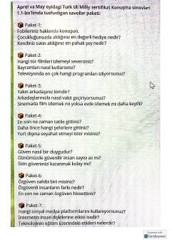

TTTurk tili milliy sertifikat imtihonining og'zaki nutq qismi uchun savollar to'plami.
Ushbu qo'llanma turk tili milliy sertifikat imtihonlarining og'zaki nutq (konusma) qismi uchun mo'ljallangan savollar to'plamidir. Unda turli mavzular bo'yicha suhbatlashish ko'nikmalarini rivojlantirishga yordam beruvchi savollar paketlari keltirilgan.